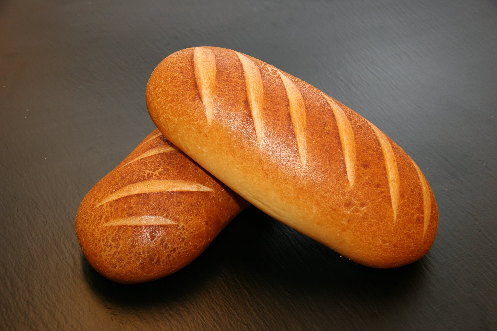
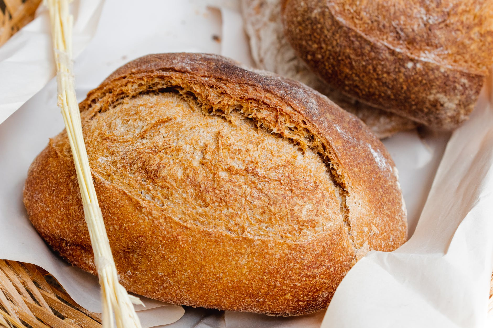
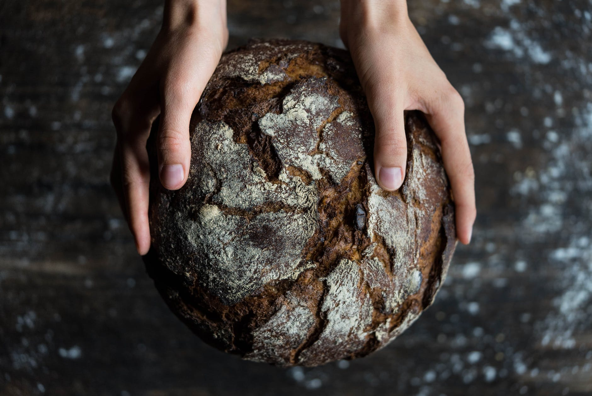
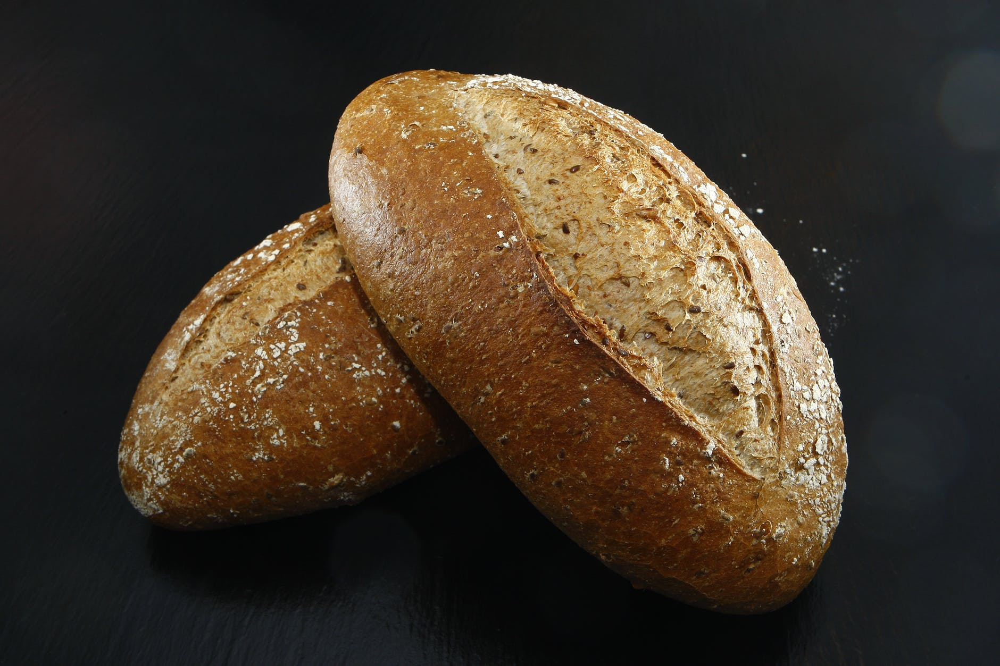
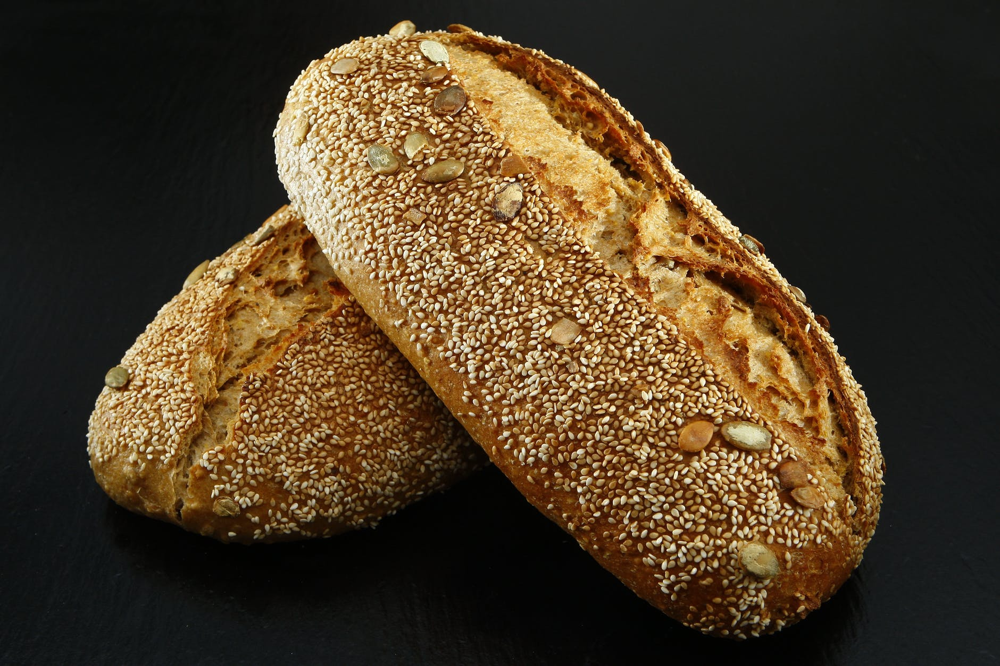
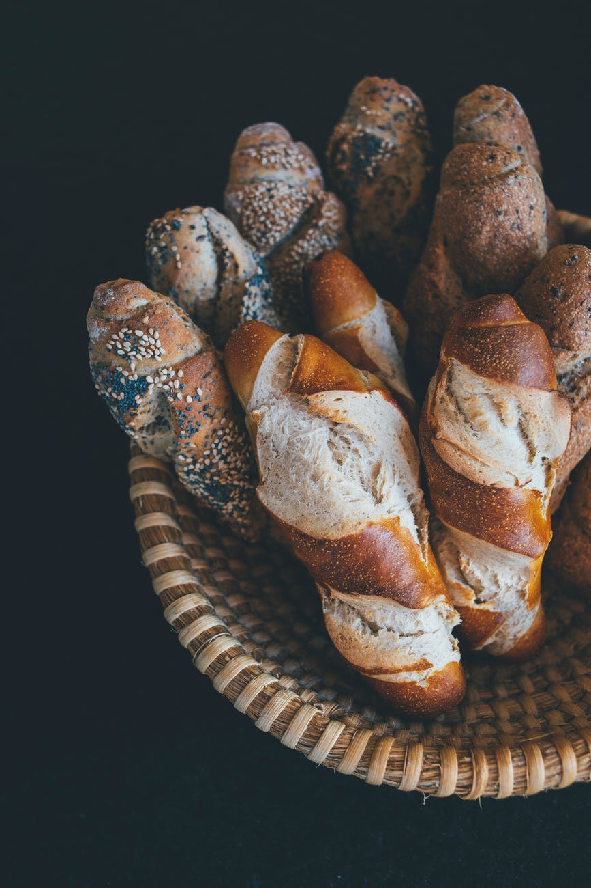

Royal Bakery
Royal Bakery

Bread made with grass grains goes back to the pre-agriculture Natufi proto-civilization 12,000 years ago.But only wheat can feasibly be sifted to produce pure white starch, a technique that goes back to at least ancient Egypt. Because wheat was the most expensive grain to grow, and the process to sift it labor-intensive, white flour was generally limited to special occasions and the wealthy, until the mid 19th century.Butter and especially stronger oils, such as walnut, can also add flavor to bread.
White Bread
Bread made with grass grains goes back to the pre-agriculture Natufi proto-civilization 12,000 years ago.But only wheat can feasibly be sifted to produce pure white starch, a technique that goes back to at least ancient Egypt. Because wheat was the most expensive grain to grow, and the process to sift it labor-intensive, white flour was generally limited to special occasions and the wealthy, until the mid 19th century.Butter and especially stronger oils, such as walnut, can also add flavor to bread.

Unlike white bread, whole-wheat bread is made from flour that uses almost the entire wheat grain—with the bran and germ in tact. This means more nutrients and fiber per slice! This bread is also great for sandwiches or, my personal favorite, egg in a hole. Dry milk powder adds flavor to bread and can soften its texture, as in the case of this basic white sourdough
Whole Wheat Bread
Unlike white bread, whole-wheat bread is made from flour that uses almost the entire wheat grain—with the bran and germ in tact. This means more nutrients and fiber per slice! This bread is also great for sandwiches or, my personal favorite, egg in a hole. Dry milk powder adds flavor to bread and can soften its texture, as in the case of this basic white sourdough

Sourdough is a yeasted bread made from a starter — a fermented mixture of flour and water that makes many batches of bread. In fact, it can be kept for a VERY long time! The resulting loaf has a substantial crust with a soft, chewy center and large air bubbles. It makes a BOMB grilled cheese! Try it in Cranberry Brie Pull-Apart Bread from Delish.
Sourdough
Sourdough is a yeasted bread made from a starter — a fermented mixture of flour and water that makes many batches of bread. In fact, it can be kept for a VERY long time! The resulting loaf has a substantial crust with a soft, chewy center and large air bubbles. It makes a BOMB grilled cheese! Try it in Cranberry Brie Pull-Apart Bread from Delish.

If you’re like us, going to the time and effort to make a delicious sandwich, then you don’t want to compromise your bread, you’ll want something like Crusty Italian Sandwich Rolls to hold your tasty filling. This bread has a crispy crust but with a soft interior that doesn’t crumble. And it certainly won’t injure the roof of your mouth with too crisp of a crust nor will it take ages to chew and swallow.
Italian Sandwich Roll
If you’re like us, going to the time and effort to make a delicious sandwich, then you don’t want to compromise your bread, you’ll want something like Crusty Italian Sandwich Rolls to hold your tasty filling. This bread has a crispy crust but with a soft interior that doesn’t crumble. And it certainly won’t injure the roof of your mouth with too crisp of a crust nor will it take ages to chew and swallow.

A variety of rolls are found in Europe, from white rolls made with wheat flour, to dark rolls containing mostly rye flour. Many variants include spices, such as coriander and cumin, or nuts. Also common are bread rolls containing or garnished with whole seeds such as sesame, poppy, pumpkin or sunflower.
Whole Wheat Sandwich Roll
A variety of rolls are found in Europe, from white rolls made with wheat flour, to dark rolls containing mostly rye flour. Many variants include spices, such as coriander and cumin, or nuts. Also common are bread rolls containing or garnished with whole seeds such as sesame, poppy, pumpkin or sunflower.

Because the history of the French baguette isn't completely known, several myths have spread about the origins of this type of bread. Some say Napoleon Bonaparte in essence created the French baguette in order to allow soldiers to more easily be able to carry bread with them. Since the round shape of other breads took up a lot of space, Bonaparte requested they be made into the skinny stick shape with specific measurements to be able to slide into the soldiers' uniform.
Baguette
Because the history of the French baguette isn't completely known, several myths have spread about the origins of this type of bread. Some say Napoleon Bonaparte in essence created the French baguette in order to allow soldiers to more easily be able to carry bread with them. Since the round shape of other breads took up a lot of space, Bonaparte requested they be made into the skinny stick shape with specific measurements to be able to slide into the soldiers' uniform.